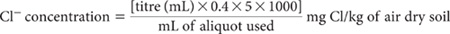
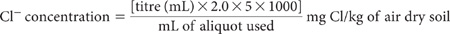
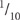
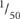
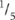

Chloride (Cl) is the most commonly occurring water-soluble anion in seasonally dry Australian soils. Although essential for plant growth, the importance of this anion in land use assessment is due to its possible accumulation in soil profiles and waters to levels detrimental to plant growth and ecosystem health. Typical concentrations in Australian soils, where Cl– has been studied extensively, range from almost zero to well in excess of 1000 mg Cl/kg. Soil solution concentrations are known to vary widely (e.g. zero to 32.3 mM; Adams 1974), while the median total concentration for soils worldwide is ≈100 mg Cl/kg (Ure and Berrow 1982).
Chlorides in soils originated from salts trapped in parent materials, from volcanic emissions, from marine encroachment and aerosols, as a component of commercial fertilisers such as muriate of potash, and as a soluble anion in irrigation and effluent waters. The Cl– concentration in soil solution likely to cause crop damage is dependent upon environmental conditions, the particular crop, and on irrigation management practices. Symptoms of Cl– toxicity in plants include burning of leaf tips or margins, bronzing and premature yellowing of leaves, and leaf drop (Chapman 1966). Chloride is actively absorbed into plant cells and, if the concentration is high enough, it may interfere with the uptake and transport of essential nutrients within and between cells.
Elevated Cl– concentrations (≈600–1500 mg/kg of water-soluble Cl–) in surface soils (0–150 mm) correlate with progressively higher concentrations of Cd in potato tubers (McLaughlin et al. 1993). Similar findings were earlier reported (Bingham et al. 1983) for Swiss chard, namely that plant concentrations of Cd increased with increasing concentrations of sodium chloride salinity. Relatively stable Cd–Cl complexes are expected because Cd2+ is a soft Lewis acid and Cl– exhibits some characteristics of a softish Lewis base (Lund et al. 1985).
There is little call for information on total soil Cl levels. Particularly in the ancient landscapes of sub-humid to semi-arid Australia, Cl– derived from marine sediments, rocks and rainfall migrated with water movement to eventually accumulate in many subsoils, sometimes to high levels. Hydrological changes associated with land clearing, cultivation, drainage and irrigation, subsequently mobilised significant amounts of the salt, sometimes into waterways, to the soil surface or to deeper layers of the soil profile. The measurement of water-soluble soil Cl– at a range of depths helps quantify these changes and the effects of different land and crop management options. Harris and Bond (1960) have reported on the problems of soil salinity in turf wicket management. Dryland salinity currently affects more than 5 million hectares of land in Australia (Anon 2004).
Values of water-soluble Cl– useful for the general interpretation of soil chemical analyses, irrespective of sampling depth, are: <100, 100–300, 300–600, 600–2000 and >2000 mg Cl/kg dry wt for ratings of very low, low, medium, high and very high, respectively (Rayment and Bruce 1984).
Figure 5.1. The effects of methods of measurement of water-soluble soil chloride on % robust CVs derived from ASPAC soil inter-laboratory proficiency programs from 1997–2007. The trends are highly significant.
The laboratory estimation of Cl– soluble in aqueous extracts (1:5 soil/water) can be performed (following filtration or centrifugation) by any of the four methods described (5A1–5A4), with little expected influence on the numeric values obtained. The methods described involve (i) a potentiometric titration procedure; (ii) automated colorimetric analysis, based on the reaction of Cl– with ferric nitrate and mercuric thiocyanate (automated ferricyanide method); (iii) the use of ion chromatography (two techniques), and (iv) ICPAES (e.g. Spectroflame™ ICP) at a wavelength of 134.724 nm. See preambles to individual methods for more details. Remotely sensed electromagnetic measurements made in the field that rely on the common finding that soil EC increases with increasing salinity is beyond the scope of this chapter.
Choice of laboratory method is largely an issue of preference and the laboratory’s level of instrumental sophistication and operator training. Another consideration is relative analytical performance, with some data provided in Figure 5.1 and in Appendix 2. Figure 5.1 shows how robust coefficients of variation (%) have varied with soil Cl– concentrations by the two most common methods used across Australasia. The data (sample median Cl– values) were sourced from ASPAC inter-laboratory proficiency programs from 1997–2007, including those reported by Peverill and Johnstone (1997) and Rayment et al. (2007). For those programs, homogenous soil samples of <0.5 mm were analysed by multiple laboratories. Across those years, Method 5A2a was better performed than was Method 5A1, particularly at soil concentrations <50 mg Cl/kg.
Table 5.1 has summary details on the methods included in this chapter for measuring water-soluble Cl–. More details on each are provided in method preambles.
This method carries the same code in Rayment and Higginson (1992). Chloride ions in clarified soil/water extracts are determined by potentiometric titration with AgNO3 in conjunction with an Ag/AgNO3 electrode array. For routine soil testing of non-contaminated rural lands, it is usual to assume no interfering ions of consequence are present. I– and Br– are titrated as Cl–, however, so may need to be considered when soil samples are derived from mine spoil, contaminated land and the like. The same applies to ferricyanide, which causes high results and should be destroyed if known to be present in measurable concentrations. Interference from chromate and dichromate ions can be avoided by reducing them to the chromic state, or by their removal. Ferric iron also interferes when present in substantially greater amounts than Cl– (APHA 1998).
Table 5.1. Summary detaÕs of method codes, method titles, technologies and expected reliabÕity of soÕ tests described in this chapter.
Code |
Technology |
Test method |
Notes |
5A1 |
Empirical extraction — potentiometric titration. |
Chloride – 1:5 soil/water extract, potentiometric titration. |
‘Classical’ analytical finish, best suited to small laboratories with simple analytical equipment. |
5A2a |
Empirical extraction — reliable automated colour finish by SFA. |
Chloride – 1:5 soil/water extract, automated colour. |
Best performed soil Cl method in ASPAC inter-laboratory proficiency programs, particularly at concentrations <50 mg Cl/kg. Method suits well equipped, large throughput, automated laboratories. |
5A2b |
Empirical extraction — reliable automated colour finish by FIA. |
Chloride – 1:5 soil/water extract by FIA. |
Similar to 5A2a, but requires close attention (filtering) to ensure no particles enter the flow stream. |
5A3a |
Empirical extraction — reliable IC analytical finish. |
Chloride – 1:5 soil/water extract, ion chromatography (chemical suppression of eluent conductivity). |
Proven analytical technology that requires finely filtered extracts of low ionic strength. Suits low throughput and/or small research laboratories. |
5A3b |
|
Chloride – 1:5 soil/water extract, ion chromatography (single-column with electronic suppression of eluent conductivity). |
|
5A4 |
Empirical extraction – ICPAES analytical finish. |
Chloride – 1:5 soil/water extract, ICPAES. |
Attractive option for laboratories equipped with ICP instrumentation that can operate at a wavelength of 134.72 nm. |
This titration-based method has long been used for assessing the Cl– salinity of Australian soils, but it offers few analytical advantages over an alternative (not included) based on a mercurimetric titration, except when soil extracts are deeply coloured.
Silver/Silver Chloride Electrode
Silver (Ag)/silver chloride (AgCl) electrodes can be obtained commercially or manufactured from a length (≈15 cm × ≈1.6 mm dia) of Ag wire attached to an electrical connection of a millivolt meter or equivalent. The clean Ag wire (preclean with 30% HNO3 until effervescence just commences) should be coated with a thin layer of AgCl by electrolysis. Pre-clean the Ag wire with fine emery paper followed by 30% HNO3 until effervescence just commences, then immerse (to about 1 cm) in 0.1M HCl and connect to the positive terminal of a 2 volt battery. Connect a Pt electrode to the negative pole through a variable resistance and ammeter. Pass a current of 3 to 4 milliamps until an even covering of AgCl deposits on the Ag wire. This should take from 1 to 30 min. For convenience, prepare several electrodes in the session and store in an aqueous NaCl solution of about 2000 mg/L. When not in use, store the electrodes in water. It is necessary to clean and recoat the Ag/AgCl electrodes occasionally but, with care, they should last for several years (Piper 1944).
Double Junction Calomel Electrode
Use a calomel electrode with a secondary salt bridge of saturated potassium nitrate to prevent leakage of Cl– into the test solutions. Alternatively, a mercury/mercurous sulfate electrode, such as Radiometer type K601, may be substituted (IR Wilson, pers.comm.).
0.01128 M Potassium Chloride Standard
1 mL contains 0.4 mg Cl.
Dissolve 0.8411 g potassium chloride (KCl; previously dried at 110°C for 2 h) and dilute to 1.0 L with deionised water.
Silver Nitrate Standard A
1 mL 0.011283 M AgNO3 contains 1.22 mg Ag, equivalent to 0.4 mg Cl.
Dissolve 1.9166 g silver nitrate (AgNO3) and dilute to 1.0 L with deionised water to prepare a solution of ≈0.01128 M AgNO3. Store in a brown glass bottle, away from light.
Silver Nitrate Standard B
1 mL 0.0564 M AgNO3 contains 6.08 mg Ag, equivalent to 2 mg of Cl.
Dissolve 9.583 g AgNO3 and dilute to 1.0 L with deionised water to prepare a solution of ≈0.0564 M AgNO3. Store in a brown glass bottle, away from light.
1.5 M Nitric Acid
Standardisation of AgNO3 solution
For the AgNO3 Standard A, pipette 20.0 mL KCl Standard into a 250 mL beaker, add about 100 mL deionised water, 2 mL 1.5 M HNO3 (dip pipette) and place on a magnetic stirrer. Insert the Ag/AgCl electrode and the preferred reference electrode connected to an automatic titrator or a millivolt meter. Commence stirring and titrate with AgNO3 solution. When using a millivolt meter, record the millivolt readings for each addition of AgNO3. The end-point is indicated when the largest voltage change occurs for a small constant addition of AgNO3. This should occur at ≈267 mV with a calomel reference electrode.
Repeat for the AgNO3 Standard B but use a 100 mL aliquot of KCl standard.
where t = titre (mL) of the particular AgNO3 solution
These standardisations should be repeated on completion of each batch.
Soil Extract
Prepare 1:5 soil/water suspensions as described for Method 3A1 and clarify by centrifugation or filtration. Take a suitable aliquot of known volume into a 250 mL beaker. If there is evidence of appreciable interfering ions, these should be removed/destroyed at this stage; see APHA (1998) for details. Otherwise add 100–200 mL deionised water, add 2 mL 1.5 M HNO3 and introduce a mechanical or magnetic stirrer. Insert electrodes and titrate with the appropriate AgNO3 Standard (depending on the expected level of Cl–) to the endpoint.
For exactly 0.011283 M AgNO3 solution:

For exactly 0.0564 M AgNO3 solution:

Make appropriate adjustments to calculations if AgNO3 Standards are not exactly the concentrations shown.
Report water-soluble Cl– (mg Cl/kg) on an air-dry soil basis.
This method, coded as 5A2 in Rayment and Higginson (1992), involves SFA, a system broadly described elsewhere (e.g. Gordon et al. 1993; Section 4120 of APHA 2005). The SFA systems herein outlined are examples based on AutoAnalyzer I/II technology and microbore technology. It is recognised that improvements in system performance are ongoing, including faster rates of analysis, lower reagent volumes, more reliability, automatic data handling, sample dilution and speedier reagent change-over. Reductions in dispersion have centred on smaller internal diameters of reaction tubing, down from 2.4 mm in the Technicon AutoAnalyzer I, to 2 mm in the AutoAnalyzer II, and to 1 mm in more modern instruments (Jodo et al. 1992).
The latest systems incorporate a better understanding of the way in which dispersion, tubing diameter and flow rate are interrelated (Gordon et al. 1993). Continuous flow instrumentation uses a peristaltic pump to draw sample extracts from the sampler into a manifold designed to mix the samples with reagents that are being continuously pumped at predetermined flow rates, and on eventually to the colorimeter detector. The analyst must be guided by the operational instructions and directions given by the manufacturer. This could require changes to the specified reagents and to the flow diagram provided for this method.
Basis of the colorimetric reaction used is the formation – in the presence of ferric ions and free thiocyanate ions – of highly coloured ferric thiocyanate in proportion to Cl– concentrations. Source of the thiocyanate ions is mercuric thiocyanate; thiocyanate ions are liberated when soluble mercuric chloride forms. Although I– and Br– are also measured along with Cl– (TA Beech, pers.comm.), it is normally assumed for natural soils that this automated ferricyanide method has no interferences of significance (APHA 1998).
Stock Ferric Nitrate Solution
Dissolve 202 g ferric nitrate (Fe(NO3)3.9H2O) in 600 mL deionised water, add 31.5 mL nitric acid (HNO3; 14 M) and dilute to 1.0 L with deionised water. Store in a dark bottle.
Dissolve 4.17 g mercuric thiocyanate [Hg(CNS)2] in about 500 mL methanol (CH3OH) and make to 1.0 L with CH3OH. Filter if necessary.
Wetting Agent – Brij 35
Shake 30 g of polyoxyethylene 23 lauryl ether (Brij 35) with 20 mL iso-propyl alcohol [propane-2-ol, (CH3)2-CH-OH] until dissolved; several hours may be required. Make to 100 mL with deionised water.
Chloride Colour Reagent
When required, combine 150 mL ferric nitrate solution, 150 mL mercuric thiocyanate solution, 1.0 mL Brij 35 wetting agent and make to 1.0 L with deionised water. Store in dark bottle but not under refrigeration.
0.75 M Nitric Acid
Dilute 54 mL nitric acid (HNO3; 14 M) to 1.0 L with deionised water then add 1.0 mL Brij 35 wetting agent.
Chloride Primary Standard
1 mL contains 2 mg of Cl.
Dissolve 3.2969 g sodium chloride (NaCl; previously dried at 105°C for 4 h) in deionised water and make volume to 1.0 L.
Chloride Working Standards
Add 1.0, 2.5, 5.0, 12.5, 25.0, 37.5, 50.0, 75.0, 100.0 and 125.0 mL of Cl Primary Standard to separate 1.0 L volumetric flasks and dilute to volume with deionised water. These solutions contain 2.0, 5.0, 10.0, 25.0, 50.0, 75.0, 100, 150, 200 and 250 mg Cl/L and for a 1:5 soil/water ratio are equivalent to 10.0, 25.0, 50.0, 125, 250, 375, 500, 750, 1000 and 1250 mg Cl/kg of air-dry soil.
Prepare 1:5 soil/water suspensions as described in Method 3A1. Filter or centrifuge a suitable aliquot for automated SFA. Ensure components of the manifold are assembled as detailed on the relevant flow sheet (see Figure 5.2 or Figure 5.3; Figure 7.7 if both Cl– and NO3-N are required), or adapt as guided by the manufacturer. Instrument selections and settings should also be in accord with manufacturer’s instructions.
‘Condition’ the system before use by pumping reagents and relevant standard solutions. Make a final check on instrument settings, then determine Cl– concentrations in soil extracts directly from standard solutions run on commencement and as required throughout the batch of unknown soil extracts. Use deionised water as the wash solution and to dilute soil extracts of high Cl– concentrations.
Report water-soluble Cl– (mg Cl/kg) on an air-dry basis.
Flow injection analysis systems typically operate at high sensitivity. The technology involves introducing, under the force of a peristaltic pump, a precisely measured volume of liquid sample from the sampler into a continuously flowing carrier stream. An injection valve with a fixed-volume sample loop or an injection valve with a fixed time period determines the injected volume of sample. A carrier stream sweeps the sample out of the loop and into the manifold where it disperses. The concentration gradient formed is detected continuously by (in this case) a colour reaction that occurs in the presence of continuously flowing reaction solutions (see Section 4130 of APHA 2005 for further details of the technology).
Figure 5.2. A continuous, segmented flow sheet (AutoAnalyzer I/II technology) for water-soluble chloride.
The colorimetric chemical reaction involved is identical to that of Method 5A2a; i.e. Cl– reacts with mercuric thiocyanate to produce mercuric chloride, liberating thiocyanate ions. In the presence of ferric salts, these thiocyanate ions produce a characteristic orange-like colour, the intensity of which is proportional to the Cl– concentration. In common with Method 5A2a, Br–, I–, cyanide, thiosulfate and nitrite will interfere positively if present, which is unlikely in most natural (uncontaminated) soils. Expect Methods 5A2a and Method 5A2b to yield virtually identical results.
Figure 5.3. A micro-bore continuous flow manifold for water-soluble chloride.
Figure 5.4. Example of a generic FIA manifold for water-soluble chloride. Tubing volumes are only examples, which may be scaled down proportionally as required and in accord with manufacturer’s recommendations.
Use reagents and standard solutions from Method 5A2a for guidance, or as advised by the manufacturer. All reagents should be free of particulates. Alternatively, vacuum filter before use through a 0.45 μm membrane filter known not to be contaminated by Cl–. Degas reagents before use if necessary.
Prepare 1:5 soil/water suspensions as described in Method 3A1. Filter or centrifuge a suitable aliquot for automated FIA. These should be free of particulates. If necessary, pass the extract through a 0.45 μm membrane filter known not to be contaminated by Cl–.
Ensure individual components of the FIA–Cl– manifold are assembled in accord with manufacturer’s recommendations, guided by Figure 5.4.
‘Condition’ the system before use by pumping reagents and relevant standard solutions. Make a final check on instrument settings, then determine Cl– concentrations in soil extracts directly from standard solutions run on commencement and as required throughout the batch of unknown soil extracts. A good, second-order polynomial calibration can be expected. Use deionised water as the wash solution and to dilute soil extracts of high Cl– concentrations.
Report water-soluble Cl– (mg Cl/kg) on an air-dry basis.
Ion chromatography permits quantitative determination of common anions (F–, Cl–, NO2–, Br–, NO3–, HPO42–, SO42–, ClO4–) in known aqueous matrices within the mg/L concentration range or lower. The technology can effectively distinguish the halides (F–, Cl–, Br–) and eliminates the need to use hazardous reagents during analysis (APHA 1998). The technique is not commonly recommended for F– in unknown matrices for reasons including possible interference from simple organic acids (formic, carbonic, etc.) that elute close to F–. There are ‘work-arounds’ using special columns with dilute eluent or gradient elution with NaOH. Ion chromatography analyses can be completed sequentially within 30 min or less using a few mL of extract. Alternative IC technology with electronic suppression of eluent conductivity and conductivity detection is also available (see Method 5A3b). Analysts should note that Cl– and NO2– (if present) elute close together and therefore are potential interferences for each other (ASTM 2000). Also, if a particular anion is present at a high concentration, it may interfere by causing a very large peak on the chromatogram, causing other peaks to be masked. Such interferences are often avoided by dilution and/or via the use of specialised columns.
Determination of Cl– concentration, in conjunction with the other anions mentioned, involves injecting a finely filtered aliquot (≤0.45 μm, with <0.20 μm membrane filter preferred) of the 1:5 soil/water extract into an IC appropriately configured. In the system described, based on O’Dell et al. (1984), the sample is pumped through three different ion exchange columns and then into a conductivity detector.
The first column (pre-column) acts as a guard, protecting the second or separator column from fouling by particulates including OM. The separator column typically contains a styrene divinylbenzene-based anion exchange resin of low capacity, designed to separate anions based on their affinity for exchange sites on the resin. The third is a suppressor column packed with a high-capacity cation exchanger capable of converting the eluent and separated anions to their corresponding acids. Finally, the separated anions, in their acid form, are determined quantitatively by their respective retention times, following detection with an EC cell and comparison with known standards (APHA 1998).
This chemically-suppressed, IC system has United States Environmental Protection Agency approval for the analysis of Cl–, NO3– and SO42– in drinking water. The method is also suited to surface waters, and mixed domestic and industrial wastewaters (O’Dell et al. 1984). The approximate detection limit is 0.1 mg Cl/L, which equates to 0.5 mg Cl/kg of air-dry soil. Refer to Australian Standard AS 3741 (Anon 1990), Section 4110 C of APHA (1998) and Method D 4327–97 of ASTM (2000) for further details on analysis by IC.
Reagent Water
Deionised or distilled water, analytically free of the anions of interest and containing no particles >0.20 μm.
Eluent Solution
Dissolve 0.2520 g sodium bicarbonate (NaHCO3) in reagent water. Separately dissolve 0.2544 g sodium carbonate (Na2CO3) in reagent water then combine and make to 1.0 L. This solution contains 0.003 M NaHCO3 and 0.0024 M Na2CO3. As the eluent solution acts as a growth media for micro-organisms, it should not be kept for longer than one month. Changing the eluent solution may also change the order or time of elution of the anions of interest.
Suppressor Regenerating Solution (≈0.0125 M H2S4)
Dilute 0.7 mL sulfuric acid (H2SO4; 18 M) in reagent water and make to 1.0 L.
Chloride Primary Standard
1 L contains 1000 mg of Cl–.
Dissolve 1.6485 g sodium chloride (NaCl; previously dried at 110°C for 2 h) in reagent water and make to 1.0 L in a volumetric flask. This solution is stable for at least one month when stored at ≈4°C.
Chloride Solution for Retention Time
1 L contains 4 mg of Cl–.
Dilute 4.0 mL Cl Primary Standard with reagent water and make to 1.0 L in a volumetric flask. The concentration can be increased to suit the particular equipment and column/s.
Anion Calibration Solutions
Prepare a reagent water blank and at least three different solutions containing known concentrations of Cl–, plus other anions to be tested. Anions in which there is no interest may be omitted. These solutions should be prepared fresh daily if they contain NO2–, NO3– and/or HPO42–; otherwise prepare weekly.
High-range Calibration Solution
Dilute volumes of Anion Primary Standards as specified in Table 5.2 with reagent water and make to 1.0 L in a volumetric flask.
Intermediate-range Calibration Solution
Dilute 10.0 mL freshly prepared High-range Calibration Solution with reagent water and make to 100 mL in a volumetric flask. The anion concentrations in this calibration solution are  of those in the high-range calibration solution.
Low-range Calibration Solution
Dilute 20.0 mL freshly prepared Intermediate-range Calibration Solution with reagent water and make to 100 mL in a volumetric flask. The anion concentrations in this solution are  those in the High-range Calibration Solution, equivalent to  those in the Intermediate-range Calibration Solution.
Ion Chromatograph
Select/set up a complete system including syringes, analytical columns, compressed air, conductivity detector, data recording and peak integrating system/s (see Figure 5.5).
Anion Guard Column
4 × 50 mm, Dionex P/N 030825 or equivalent.
Anion Separator Column
4 × 250 mm, Dionex P/N 030827 or equivalent.
Anion Suppressor Column
Fiber, Dionex P/N 35350 or equivalent. When the suppressor column becomes or approaches exhaustion, regenerate with suppressor regenerating solution in accord with manufacturer’s instructions.
Conductivity Cell
≈6 μL volume; Dionex or equivalent.
Prepare 1:5 soil/water suspensions as described in Method 3A1. Filter a suitable aliquot for same-day analysis using at least a 0.45 μm pre-washed membrane and preferably one of 0.20 μm.
Figure 5.5. Schematic of a chemically suppressed Ion Chromatographic System.
Set up the IC in accord with manufacturer’s instructions. Specifications typically change over time. Equilibrate by pumping Eluent Solution (usually around 2 mL/min) for ≈15–20 min through all three columns. Allow sufficient time for the system to stabilise, or until a stable baseline is obtained. Adjust the conductivity detector during this period (usually 10–30 μS). Also zero-out eluent conductivity with the detector offset, and with the fiber or membrane suppressor, adjust the regeneration flow rate, usually to 2.5–3 mL/min.
Determine the retention time for each anion by injecting a 2.0 to 3.0 mL aliquot of the Cl– Solution for Retention Time (4.0 mg Cl/L). Use a syringe and inject into the sample entry port. If other anions are to be determined, their retention times should also be calibrated at this stage, with solutions containing only the anion of interest. Note the time required for the peak for each anion to appear on the chromatogram and record in minutes. These times will vary from one column to another, and are influenced by eluent flow rates and temperature. With the Eluent Solution described, the order of anions is always F–, Cl–, NO2–, NO3–, HPO42– and SO42–. Retention times vary with instrument settings and solution concentrations. An example is around 1, 3, 4.5, 9, 11 and 21 min, respectively. Bromine, if included, would appear between the NO2– and NO3– peaks.
Table 5.2. SolutŠns and dÕutŠns for the high-range calibratŠn solutŠn containing anŠns of analytical interest.
AnŠn Primary Standard |
Volume of AnŠn Primary Standard/L (mL) |
AnŠn concentratŠn of element (mg/L) |
|
AnŠn |
Method code for 1:5 soÕ water extract |
|
|
Cl– |
5A3a and 5A3b |
10.0 |
10 |
F– |
Not applicable |
10.0 |
10 |
NO2-N |
Not applicable |
10.0 |
10 |
NO3-N |
7B2 |
30.0 |
30 |
PO4-P |
Not applicable |
20.0 |
20 |
SO4-S |
Not applicable |
20.0 |
20 |
Analyse the Reagent Water blank and the High-, Intermediate- and Low-range Calibration Solutions by injecting 2–3 mL aliquots as previously described. Prepare calibration curves for Cl– (and all other anions of interest) by plotting peak height (usually μS) or peak area – from the chromatogram – against the concentrations of the anion calibration solutions. Note that a single standard calibration is possible if linearity can be established for a known detector setting. In such cases, determine the calibration factor F from peak height or area and the retention time. A calibration curve is preferred, however, for better precision and bias when the relationship is non-linear such as with HPO42–(APHA 1998).
Next, inject a known volume of the filtered soil/water extract (same volume as used for the calibration solution/s). Record the ion chromatogram, evaluate peak height or peak area as required for comparison with the relevant calibration curve, and determine the anion concentration (Cl– in this case), initially as mg anion/L. Multiply by 5 to convert to mg anion species/kg air-dry soil. [Another sample can be injected after the last peak (SO42–) has appeared and the conductivity signal has returned to base line.] To avoid interference when Cl– or other anions present at high concentrations overlap neighbouring species, minimise this by sample dilution with reagent water, and adjust for the dilution used.
When the calibration is known to be linear, the following equation can be used to calculate the anion concentration as follows:
5 mg anion/kg air dry soil = [H × F × D × 5]
where H = peak height or area;
F = response factor or concentration of standard/height (or area) of standard;
D = dilution factor for those samples requiring dilution, and
5 accounts for the 1:5 soil/solution ratio.
Report water-soluble Cl– (mg Cl/kg) on an air-dry basis.
This variant of the ion chromatography technology described in 5A3a shares the same analytical capabilities, advantages and disadvantages over other analytical finishes mentioned in the preamble to that method. Anions in clear aqueous extracts within the mg/L concentration range separate in the order F–, Cl–, NO2–, Br–, NO3–, HPO42–, and SO42–, with individual analyses able to be completed within 30 min using only a few mL of extract. No particles passing through the system should exceed 0.45 μm and best separations occur when sample pH values range between 5 and 9. The approximate detection limit is 0.1 mg/L, with an injection volume of 100 μL, which for Cl in a 1:5 soil/water extract equates to 0.5 mg Cl/kg of air-dry soil.
The application is applicable to the quantitative analysis of F– only if extracts are known to be free (or made to be free) of interference from short-chain organic acids and carbonate. For example, solid-phase extraction cartridges and/or filtering devices that retain organic acids and pass inorganic anions are available to enable F– analysis, typically with a low eluent flow rate. Note that ClO4– and Br– coelute under the specified conditions. Refer to Australian Standard AS 3741 (Anon 1990) and Section 4110 of Section 4110 C of APHA (1998) for further details on analysis by ion chromatography. Further note that ClO4–, which is environmentally persistent, could be present at low concentrations via impurities in naturally occurring N fertilisers sourced from very dry locations and as an uncombusted residue from solid-state rockets (Thorne 2004).
Reagent Water
Deionised or distilled water, analytically free of the anions of interest (≈18 megohm/cm resistivity) and containing no particles >0.20 μm.
Borate/Gluconate Concentrate
Combine 16.0 g sodium gluconate [CH2(OH).(CH.OH)4.COONa], 18.0 g boric acid (H3BO3), 25.0 g di-sodium tetraborate decahydrate (Na2B4O7.10H2O) and 125 mL glycerol (1,2,3-Propanetriol; C3H8O3) in ≈600 mL reagent water. Mix well and make to 1.0 L with reagent water.
Eluent Solution [0.011 M borate, 0.0015 M gluconate, and 12% (v/v) acetonitrile]
Combine and mix 20 mL Borate/Gluconate Concentrate solution, 120 mL HPLC-grade acetonitrile (methyl cyanide; CH3CN), and 20 mL HPLC-grade n-butanol (CH3.(CH2)3.OH), and dilute to 1.0 L with reagent water. Ensure freedom from particulates by including an in-line filter before the separator column. To minimise the possibility of base-line drift, degas the eluent solution by bubbling with an inert gas such as helium or argon before use.
Chloride Primary Standard
1 L contains 1000 mg of Cl–.
Prepare and store as in Method 5A3a.
Chloride Solution for Retention Time
1 L contains 4 mg of Cl–.
Prepare and store as in Method 5A3a. The concentration can be increased to suit the particular equipment and column/s.
Anion Calibration Solutions
Prepare as in Method 5A3a. The concentration/s can be increased/varied to suit the particular equipment and column/s. These solutions should be prepared fresh daily if they contain NO2–, NO3– and/or HPO42–, otherwise prepare weekly.
High-range Calibration Solution
Dilute volumes of anion primary standards as specified in Table 5.2 with reagent water and make to 1.0 L in a volumetric flask. The concentration/s can be increased/varied to suit the particular equipment and column/s.
Intermediate-range Calibration Solution
Prepare as in Method 5A3a. The concentration/s can be increased/varied to suit the particular equipment and column/s.
Low-range Calibration Solution
Prepare as in Method 5A3a. The concentration/s can be increased/varied to suit the particular equipment and column/s.
Ion Chromatograph
Select/set up a complete isoconductive gradient ion system with an anion exchange and guard columns, plus syringes, conductivity detector, data recording and peak integrating system/s.
Anion exchange and guard columns
Refer to manufacturer’s recommendations.
Conductivity Cell
As per manufacturer’s recommendation.
Prepare 1:5 soil/water suspensions as described in Method 3A1. Filter a suitable aliquot for same-day analysis using at least a 0.45 μm pre-washed membrane and preferably one of 0.20 μm.
Set up the IC in accord with manufacturer’s instructions. Specifications typically change over time. Equilibrate the system at constant temperature for approximately 15–20 min or until a stable baseline is obtained. Make other instrumental adjustments in accord with expected Cl– concentration.
Determine the retention time for each anion by injecting a 2.0–3.0 mL aliquot of the Cl– Solution for Retention Time. Use a syringe and inject into the sample entry port. If other anions are to be determined, their retention times should also be calibrated at this stage, with solutions containing only the anion of interest. Note the time required for the peak for each anion to appear on the chromatogram and record in minutes. These times will vary from one column to another, and are influenced by eluent flow rates and temperature. Retention times in the sequence F–, Cl–, NO2–, Br–, NO3–, HPO42–, and SO42– may vary with instrument settings and solution concentrations.
Analyse the reagent water blank, the High-, Intermediate- and Low-range Calibration Solutions and unknown filtered soil extracts and calculate Cl– concentrations as described in Method 5A3a.
Report water-soluble Cl– (mg Cl/kg) on an air-dry basis.
Chloride ions in aqueous extracts of soils, when free of interfering particulates, can be measured by ICPAES, if the instrument can operate at a wavelength of 134.72 nm. Spectroflame™ ICP is one that can meet this criterion.
Reagent Water Blank
As for Method 3A1.
Chloride Primary Standard
1 mL contains 2 mg of Cl.
Prepare as for 5A2a.
Chloride Working Standards
Prepare as for 5A2a to achieve solutions equivalent to soil concentrations of (as required) 10.0, 25.0, 50.0, 125, 250, 375, 500, 750, 1000 and 1250 mg Cl/kg of air-dry soil.
Prepare 1:5 soil/water suspensions as described in Method 3A1. Filter a suitable aliquot for same-day analysis using a ≤0.45 μm pre-washed membrane.
Set up the ICPAES instrument according to the manufacturer’s instructions. Specifications may change over time but for a Cl– wavelength of 134.724 nm, instrument settings are likely to be: plasma power = 1200 W; nebuliser pressure = ≈55 psi; nebuliser flow rate = ≈0.9 L/min; auxiliary flow = ≈1.15 L/min; coolant flow = ≈15 L/min.
Equilibrate the system at constant temperature for ≈15–20 min or until stable performance is achieved. Make other instrumental adjustments in accord with expected Cl– concentration and calibrate the instrument with an appropriate selection of working standard solutions.
Analyse the reagent water blank, appropriate calibration solutions and unknown clarified or filtered soil extracts and calculate Cl– concentrations as described in Method 5A2a.
Report water-soluble Cl– (mg Cl/kg) on an air-dry basis.
Adams F (1974) Soil solution. In The Plant Root and Its Environment. (Ed EW Carson) pp. 441–481. University Press of Virginia, Charlottesville.
Anon (1990) Recommended practice for chemical analysis by ion chromatography. Australian Standard AS 3741 – 1990. Standards Australia, Sydney.
Anon (2004) Monitoring the white death – soil salinity. NOVA – Science in the News. Australian Academy of Science. http://www.science.org.au/nova/032/032key.htm.
APHA (1998) Part 4110 C. Determination of anions by ion chromatography. In Standard Methods for the Examination of Water and Wastewater 16th Edn. American Public Health Association, Washington, DC.
APHA (2005) Section 4120 and Section 4130. In Standard Methods for the Examination of Water and Wastewater, 21st Edn. (Eds AD Eaton, LS Clesceri, EW Rice and AE Greenberg) American Public Health Association, American Water Works Association, and Water Environment Federation, Maryland, USA.
ASTM (2000) D 4327–97. Standard test method for anions in water by chemically suppressed ion chromatography. In 2000 Annual Book of ASTM Standards, Section 11 Water and Environmental Technology Vol 11.01 Water (1). pp. 422–427. ASTM, Philadelphia, PA.
Bingham FT, Strong JE and Sposito G (1983) Influence of chloride salinity on cadmium uptake by Swiss chard. Soil Science 135, 160–165.
Chapman HD (Ed.) (1966) Diagnostic Criteria for Plants and Soils. University of California, Division of Agricultural Sciences, USA.
Gordon LI, Jennings JCJr, Ross AA and Krest JM (1993) A suggested protocol for continuous flow automated analysis of seawater nutrients (phosphate, nitrate, nitrite and silicic acid) in the WOCE Hydrographic Program and the Joint Global Ocean Fluxes Study. WOCE Hydrographic Program Office, Methods Manual WHPO 91–1. College of Oceanic and Atmospheric Sciences, Oregon State University, Oceanography Administration Bldg., Corvallis, Oregon.
Harris JR and Bond RD (1960) The problem of soil salinity in turf wicket management. CSIRO Division of Soils Divisional Report 3/60. Commonwealth of Australia, Adelaide.
Jodo M, Kawamoto K, Tochimoto M and Coverly SC (1992) Determination of nutrients in seawater by segmented-flow analysis with higher analysis rate and reduced interference on ammonia. Journal of Automatic Chemistry 14, 163–167.
Lund LJ, Sposito G and Page AL (1985) Determination and prediction of chemical forms of trace metals in sewage sludge and sludge-amended soils. EPA/600/2–85/053. Wastewater Research Division, Water Engineering Research Laboratory, Office of Research and Development, USEPA, Cincinnati, Ohio.
McLaughlin M, Smart M, Maier N, Freeman K, Williams C and Tiller K (1993) Cadmium accumulation in potatoes – occurrence and management. pp. 208–213. The National Potato Research Workshop, May 1993, Ulverstone, Tasmania.
O’Dell JW, Pfaff JD, Gales ME and McKee GD (1984) Test Method. The Determination of Inorganic Anions in Water by Ion Chromatography – Method 300.0. USEPA, Cincinnati, Ohio.
Peverill K and Johnstone P (1997) National Soil Quality Assurance Program Report 1997. Australasian Soil and Plant Analysis Council Inc., c/- State Chemistry Laboratory, Victoria.
Piper CS (1944) Hydrogen ion concentration, conductivity, and water soluble salts. In Soil and Plant Analysis. A Monograph from The Waite Agricultural Research Institute. pp. 7–46. The University of Adelaide, Adelaide.
Rayment GE and Bruce RC (1984) Soil testing and some soil test interpretations used by the Queensland DPI. Queensland Department of Primary Industries Information Series QI 84029.
Rayment GE and Higginson FR (1992) Australian Laboratory Handbook of Soil and Water Chemical Methods. Inkata Press, Port Melbourne.
Rayment GE, Peverill KI, Hill RJ, Daly BK, Ingram C and Marsh J (2007) ASPAC Soil Proficiency Testing Program Report 2004–05. Australasian Soil and Plant Analysis Council Inc., Melbourne.
Technicon (1970) Technicon Auto Analyser II Industrial Method No. 9970W.
Thorne PG (2004) Field screening method for perchlorate in water and soil. US Army Corps of Engineers, Engineer Research and Development Center, Cold Regions Research and Engineering Laboratory. ERDC/CRREL TR-04–8.
Ure AM and Berrow ML (1982) The elemental constituents of soils. In Environmental Chemistry Volume 2, A review of the literature published up to the mid-1980. (Senior Reporter HJM Bowen) pp. 94-204. The Royal Society of Chemistry, London.